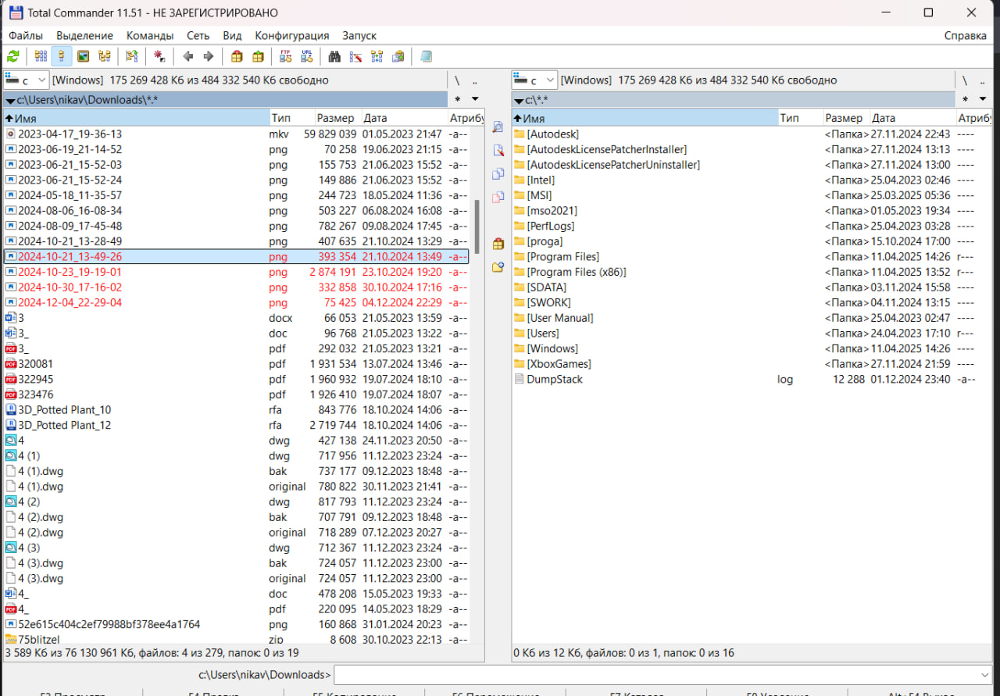
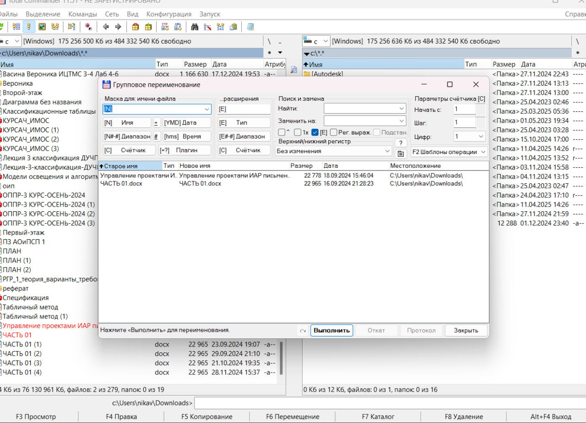

- Чрезвычайно популярное приложение, которое может сделать с вашими файлами практически что угодно. А не вошедшее в стандартную поставку добавляется плагинами. Интерфейс Total Commander вызывает ностальгические чувства, но возможности этого прекрасного менеджера с лихвой перекрывают недостаток красоты
Про Total Commander сказано очень многое. Те, кому приходится ежедневно работать с этим файловым менеджером, умеют настраивать его под свои задачи, знают комбинации клавиш быстрого доступа к различным функциям программы, а кое-кто, быть может, даже знаком и со скрытыми возможностями этой утилиты. Для таких пользователей преимущества Total Commander перед стандартным файловым менеджером очевидны
Пример первый - копирование файлов

Cколько действий нужно выполнить пользователю Total Commander для операции "копирование"?
В первой панели файлового менеджера следует выбрать директорию, в которую будет скопирован файл
Во второй панели файлового менеджера нужно выделить файл, который необходимо скопировать
Нажать последовательно F5 и Enter
Пример второй - выделение

Предположим, нужно выборочно выделить из группы папок три директории. И в "Проводнике", и в Total Commander для этого нужно сделать три щелчка мышью. Однако в "Проводнике" при этом нужно еще и держать нажатой клавишу Ctrl, стало быть, занята вторая рука. Что касается Total Commander, то в этом файловом менеджере выделение осуществляется щелчком правой кнопкой мыши по папкам или файлам.
Пример третий - переименование файлов

Еще одна простая задача - переименовать расширение файла, скажем, с TXT на HTML. В "Проводнике" выполнить это действие, с настройками операционной системы по умолчанию, нельзя. Предварительно нужно открыть меню "Пуск", запустить панель управления, открыть свойства папки и отключить в настройках опцию "Скрывать расширения для зарегистрированных типов файлов". В Total Commander этих действий делать не нужно. Имя директории или файла в этом файловом менеджере можно менять множеством способов, например, с помощью медленного двойного щелчка по нужному файлу, пункта "Переименовать" контекстного меню или же сочетания клавиш "SHIFT+F6" и т.д.
Преимущества Total Commander, конечно же, на этом не заканчиваются, их можно было бы перечислять очень долго. С помощью специальных дополнительных модулей к программе можно "прикрутить" практически любой необходимый в работе инструмент - модуль для записи дисков, конвертер файлов, проигрыватель, почтовый клиент, инструмент для работы с ISO-образами и многое другое. Причем большая часть этих дополнений распространяется бесплатно. Для человека, который включает компьютер лишь время от времени, нет особой разницы, сколько раз двигать мышью, чтобы скопировать документы или произвести с ними какие-нибудь другие действия. Такому человеку все равно, с каким файловым менеджером работать. Но для того, кто ценит удобство, кто справедливо полагает, что от утилиты для работы с файлами напрямую зависит производительность работы, использование "Проводника" неприемлемо. Мы не ставили перед собой цель убедить читателей в том, что Total Commander - самый лучший файловый менеджер. Эта утилита, как и любая другая программа, имеет недостатки, самый главный из которых - необходимость платить за этот продукт. С другой стороны, Total Commander - именно тот случай, когда отличное качество стоит своих денег.